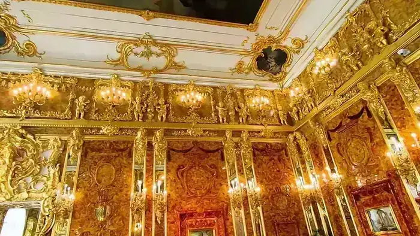
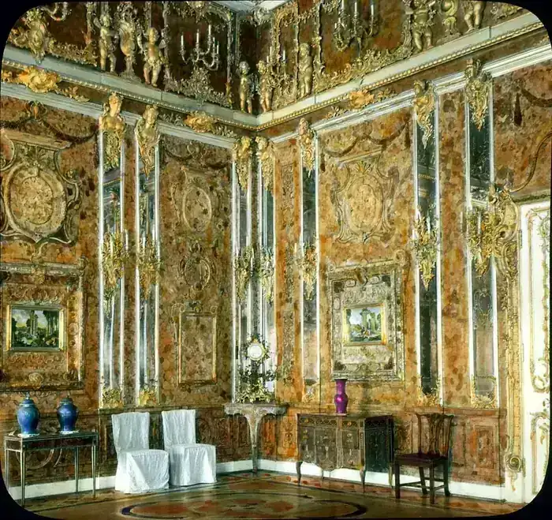

The object
The Amber Room was a set of amber panels given by Prussia to Peter the Great in 1716 and installed at the Catherine Palace near St Petersburg. It was one of the largest pieces of amber work in the world, and it was dismantled by German forces in 1941 and taken to Königsberg.
Maps, diagrams and images




In 1945, as the Red Army approached, the crates disappeared. The castle where they were stored was destroyed; the room was never found.
The theories
The main candidates are destruction — in the castle fire, or in the sinking of a ship carrying evacuees — and concealment, in a mine, a bunker or a lake. Searches have been conducted in Germany, the Czech Republic and the Baltic, including a well-publicised 2020 dig in Poland that found nothing.
Documents suggest the panels may have been moved to a castle in what is now Poland, and some accounts indicate they were destroyed in a fire there. No amber from the room has been identified since 1945.
Documented: the room, its construction, its gift, its looting and its disappearance.
Documented: the reconstruction, completed in 2003 from photographs and surviving fragments.
Not established: where the original is, or whether it survives.
Not established: any of the burial, bunker or shipwreck claims — all have been searched and none has produced the room.
Why it persists: because a lost object of enormous value is a permanent invitation to claim it has been found.
Why it is in the archive
Because it is a real loss, with real documents, that has attracted four decades of unverified claims — and because the reconstruction is an honest answer to an unanswerable question: build it again, and say so.
Open resources on this topic
- BookThe Amber Room : the untold story of the greatest hoax of the twentieth century — Scott-Clark, Cathy, 1965- · 2004 (Internet Archive, free to read)
- BookThe Amber Room — Cathy Scott-Clark · 2004 (Internet Archive, free to read)
- BookThe Amber Room — Steve Berry · 2007 (Internet Archive, free to read)
- PapersOpen-access articles: DOAJ · PubMed Central · Internet Archive Scholar
- BooksPublic-domain and borrowable copies: Open Library · Project Gutenberg · Google Books
Cite this page
Momin, S. (2026). The Amber Room. The Larger World Archive. https://drsamonline.github.io/LARGE_GLOBE/amber-room.htmlMomin, Sohil. “The Amber Room.” The Larger World Archive, 2026, https://drsamonline.github.io/LARGE_GLOBE/amber-room.html.Momin, Sohil. “The Amber Room.” The Larger World Archive, 2026. https://drsamonline.github.io/LARGE_GLOBE/amber-room.html.@misc{the2026amber,
author = {Momin, Sohil},
title = {The Amber Room},
year = {2026},
howpublished = {The Larger World Archive},
url = {https://drsamonline.github.io/LARGE_GLOBE/amber-room.html},
note = {Last reviewed 20 November 2026}
}Last reviewed 20 November 2026 · Corrections policy · this page is not peer reviewed
Sources for this page
- Wikipedia, “Amber Room” — the room, its loss and the searchesen.wikipedia.org
- Wikipedia, “Catherine Palace” — where the reconstruction isen.wikipedia.org
- Wikipedia, “Königsberg” — the city where it was last seenen.wikipedia.org
- Wikipedia, “Art theft” — the wider context of wartime lootingen.wikipedia.org